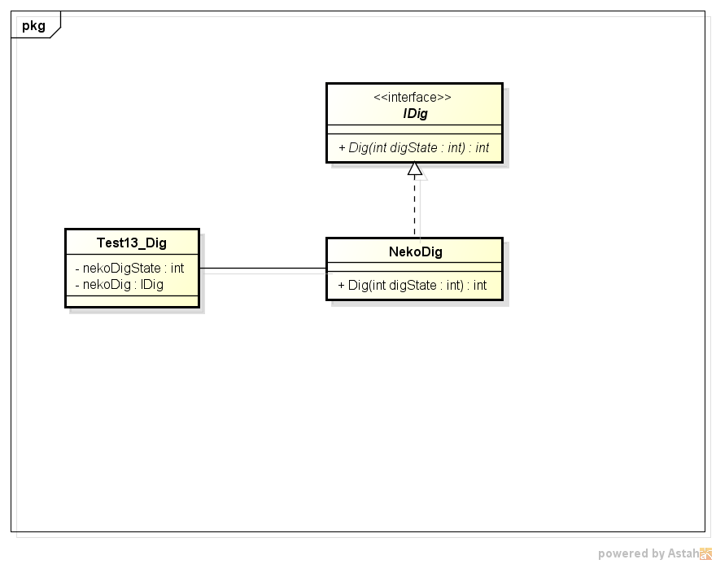
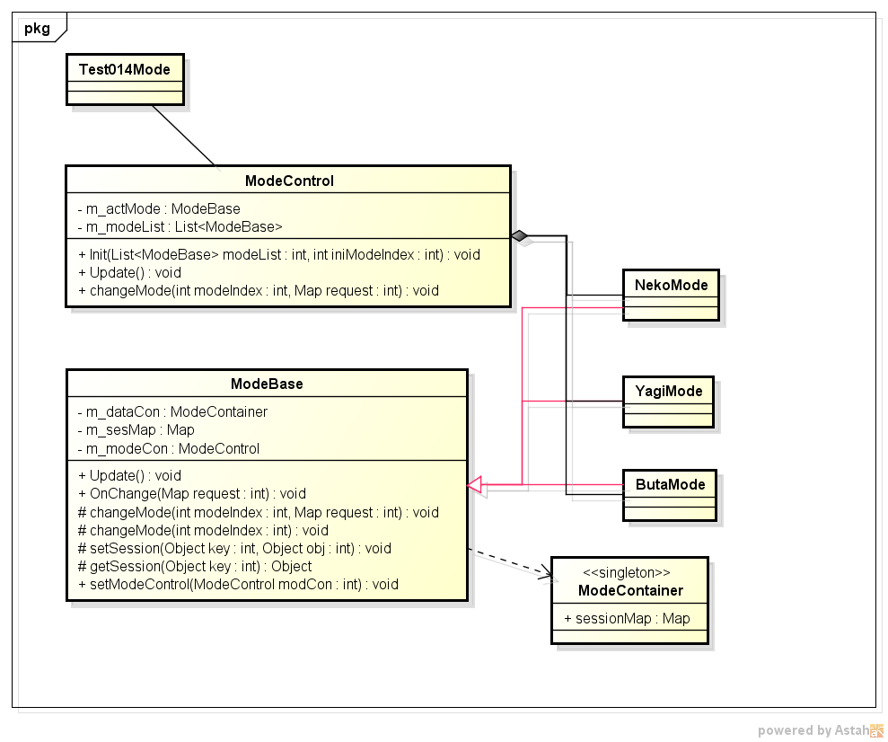

クラス図

package test_a;
import com.amaraimusi.zss_lib.CalcUtil;
public class Test013Dig {
private static int m_nekoDigStt=0;
private static NekoDig m_nekoDig;
public static void main(String[] args) {
CalcUtil.init();
System.out.println("テスト開始");
//Digクラス
m_nekoDig=new NekoDig();
//擬似スレッド
for(int i=0;i<100;i++){
m_nekoDigStt=m_nekoDig.Dig(m_nekoDigStt);
if(m_nekoDigStt==-1){
System.out.println("別の処理");
System.out.println("Digクラスの処理が終了しました。");
break;
}
}
System.out.println("テスト終了");
}
}
//Digインターフェース
interface IDig{
abstract int Dig(int digState);
}
//★Digクラス。 毎フレーム、少しずつ処理を進めていく仕組みを実装。
class NekoDig implements IDig{
@Override
public int Dig(int digState) {
if(digState==0){
System.out.println("処理その１");
digState=1;//dig状態を1にする。
return digState;
}
if(digState==1){
//10分の１の確率で状態１を抜ける。
System.out.println("処理その２");
int r=CalcUtil.rnd(10);
if(r==1){
digState=2;//dig状態2
}
return digState;
}
if(digState==2){
System.out.println("処理その３");
digState=-1;//dig状態を-1にしてdig処理終了
return digState;
}
return -1;
}
}
Modeパターンのクラス図

package test_a;
import java.util.ArrayList;
import java.util.HashMap;
import java.util.List;
import java.util.Map;
import com.amaraimusi.zss_lib.CalcUtil;
public class Test014Mode {
public static void main(String[] args) {
CalcUtil.init();//汎用計算クラス
System.out.println("テスト開始");
ModeBase nekoMode=new NekoMode();
ModeBase yagiMode=new YagiMode();
ModeBase butaMode=new ButaMode();
List<ModeBase> modeList=new ArrayList<ModeBase>();
modeList.add(nekoMode);
modeList.add(yagiMode);
modeList.add(butaMode);
ModeControl modeCon=new ModeControl();
modeCon.Init(modeList, 0);
//擬似スレッド
for(int i=0;i<10;i++){
modeCon.Update();
}
System.out.println("テスト終了");
}
}
class ModeControl{
private ModeBase m_actMode;//現在モードクラス。
private List<ModeBase> m_modeList;//モードリスト
public void Init(List<ModeBase> modeList,int iniModeIndex){
for(ModeBase mode:modeList){
mode.setModeControl(this);
}
//m_actModeIndex=iniModeIndex;
m_modeList=modeList;
this.changeMode(iniModeIndex, null);
}
public void Update(){
m_actMode.Update();
}
public void changeMode(int modeIndex,Map<Object,Object> request){
m_actMode=m_modeList.get(modeIndex);
m_actMode.OnChange(request);
}
}
//Digインターフェース
abstract class ModeBase{
private ModeContainer m_dataCon;
private Map<Object,Object> m_sesMap;
public ModeControl m_modeCon;
public ModeBase(){
m_dataCon=ModeContainer.getInstance();
m_sesMap=m_dataCon.sessionMap;
}
//毎フレーム呼び出される。
abstract public void Update();
//モード変更直後に呼び出される。
abstract public void OnChange(Map<Object,Object> request);
protected void changeMode(int modeIndex,Map<Object,Object> request){
m_modeCon.changeMode(modeIndex,request);
}
protected void changeMode(int modeIndex){
m_modeCon.changeMode(modeIndex,null);
}
protected void setSession(Object key,Object obj){
m_sesMap.put(key, obj);
}
protected Object getSession(Object key){
return m_sesMap.get(key);
}
public void setModeControl(ModeControl modCon){
this.m_modeCon=modCon;
}
}
/**
* モードクラス用のコンテナ。データ保持用
* @author Administrator
*
*/
class ModeContainer{
public Map<Object,Object> sessionMap;//セッションコンテナ
private static ModeContainer mySelf;
private ModeContainer(){
sessionMap=new HashMap<Object,Object>();
}
public static ModeContainer getInstance(){
if(mySelf==null){
mySelf=new ModeContainer();
}
return mySelf;
}
}
class NekoMode extends ModeBase{
public NekoMode(){
super();
}
@Override
public void Update() {
System.out.println("猫モードのUpdate");
// 1/4の確率でモード変更
int r=CalcUtil.rnd(4);
if(r==1){
System.out.println("山羊モードに変更します。");
this.changeMode(ModeConst.YAGI_MODE);//山羊モードに変更
}
}
@Override
public void OnChange(Map<Object, Object> request) {
System.out.println("猫モードのOnChange");
}
}
class YagiMode extends ModeBase{
public YagiMode(){
super();
}
@Override
public void Update() {
System.out.println("山羊モードのUpdate");
// 1/4の確率でモード変更
int r=CalcUtil.rnd(4);
if(r==1){
System.out.println("豚モードに変更します。");
Map<Object,Object> request=new HashMap<Object,Object>();
request.put("yagi","山羊からのお手紙");
this.changeMode(ModeConst.BUTA_MODE,request);//豚モードに変更
}
}
@Override
public void OnChange(Map<Object, Object> request) {
System.out.println("山羊モードのOnChange");
}
}
class ButaMode extends ModeBase{
public ButaMode(){
super();
}
@Override
public void Update() {
// 1/4の確率でモード変更
System.out.println("豚モードのUpdate");
int r=CalcUtil.rnd(4);
if(r==1){
System.out.println("山羊モードに変更します。");
this.changeMode(ModeConst.NEKO_MODE);//山羊モードに変更
}
}
@Override
public void OnChange(Map<Object, Object> request) {
System.out.println("豚モードのOnChange");
if(request!=null){
System.out.println("豚がリクエストから受け取った情報:"+request.get("yagi"));
}
}
}
//各モードクラスを表す定数
class ModeConst{
public static int NEKO_MODE=0;
public static int YAGI_MODE=1;
public static int BUTA_MODE=2;
}